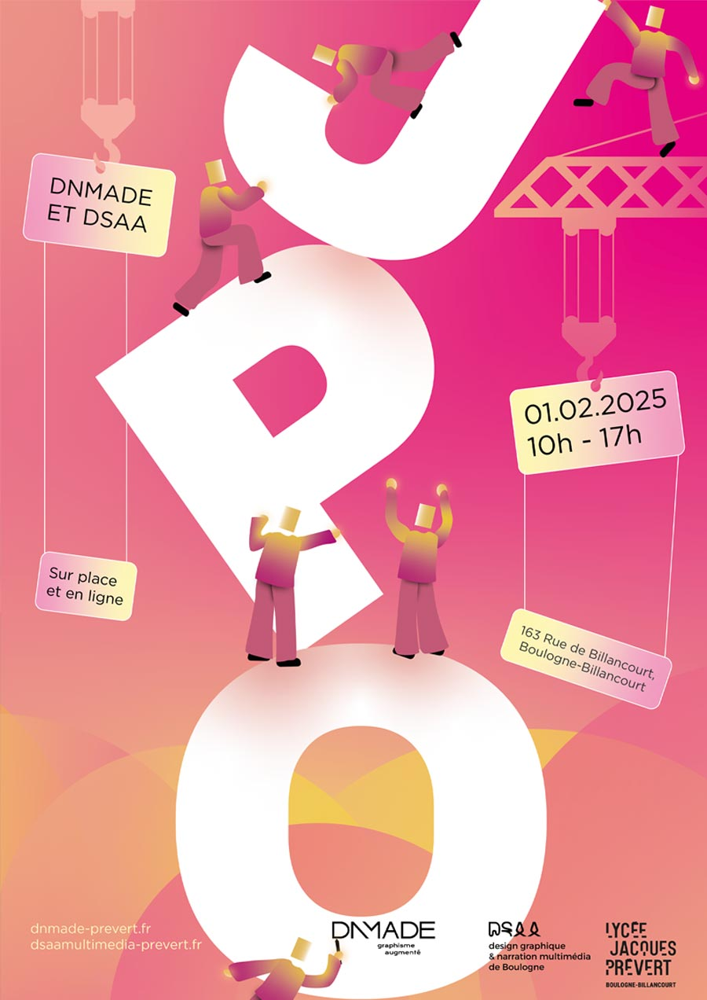

Pour l'affiche des journées portes ouvertes du lycée Jacques Prévert, j’ai choisi de mettre en avant des illustrations. J’ai représenté des étudiants sous forme de bonhommes farfelus, dans une ambiance joyeuse et dynamique, pour montrer une classe préparant l’événement comme un chantier. J’ai également décliné mes personnages pour les adapter à différents supports, illustrant différents aspects de la formation, comme le print et le numérique.

J’ai choisi l’illustration comme médium principal, car c’est un excellent moyen de me démarquer des affiches des précédentes journées portes ouvertes. Cette approche me permet aussi de jouer sur l’interaction entre les illustrations et le texte, pour créer une composition dynamique et vivante.